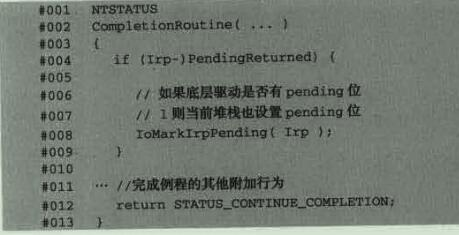

驱动的挂载
这个给我的感觉就有点像钩子链一样，一环接一环的。
上层设备可以对传过来的数据进行一层过滤，这一点又像hook技术。
挂载函数：IoAttachDeviceToDeviceStack，第一个参数是设备栈的一个设备指针，第二个参数是要挂载的设备对象，返回值的话呢就是第二个参数对象的下一设备对象。
打个比方，假设原来有一个设备对象链 B——C，其中B处于链的顶端，现在有一个新的设备对象A，执行IoAttachDeviceToDeviceStack (A,C)后，链就变成了A——B——C，同时函数返回B。
设备栈弹出的函数：IoDetachDevice
向下转发IRP
处理IRP的方式：
- 直接处理IRP，使用IoCompleteRequest函数
- 调用StartIO，实现串行化
- 让底层驱动完成
每一次调用IoCallDriver函数的时候，IRP的当前指针向下移动。
如果IRP不需要IO堆栈的时候，我们为了保持这个堆栈平衡，要使用IoSkipCurrentIrpStackLocation函数回移到上一层。
如果IRP还是需要操作，那么我们就需要将IRP参数向下复制一层，使用的函数是IoCopyCurrentIrpStackLocationToNext函数将当前的IRP参数复制到下一层。
挂载的顺序：
- 首先我们先找到我们需要挂载的设备对象，使用IoGetDeviceObjectPointer函数得到目标设备对象
- 然后创建自己的设备对象
- 然后得到自己的设备扩展，并且得到自己的设备对象
- 使用IoAttachDeviceToDeviceStack函数挂载上自己的设备
- 然后记录下底层的设备对象（通过上一个函数的返回值，记录到设备扩展）
- 然后将我们的当前设备类型设置为和底层的设备类型一样（FilterDeviceObject->Devicetype = targetDevice->Device）
- 相同设备对象特征（FilterDeviceooject->Characteristics=TargetDevice->characteristics）
- 设置设备对象标记
- FilterDeviceObject->Flags &= ~DO_DEVICE_INITIALIZING
- 上面就是去向这个标记
- FilterDeviceObject->Flags |= (TargetDevice->Flags &(DO_DIRECT_IO | DO_BUFFER_IO))
- 上面就是增加直接读取或者缓冲区读取
转发IRP
我们成功挂载IRP之后，每次给目标驱动发送IRP的时候，都会经过我们的驱动。
所以我们在Read中要写IoSkipCurrentStackLocation，略过当前的堆栈，然后IoCallDriver(pdx->TargetDevice,irp)传递下去IRP。
遍历设备对象
获取设备对象信息
- 首先我们需要得到一个设备对象，然后使用OBJECT_TO_OBJECT_HEADER(DevObj)得到这个设备的头部
- 然后通过这个对象头得到相关的信息
遍历设备的附加对象的指针：
- 得到附加设备（DeviceObject = DevObj->AttachedDevice）
- 然后使用While循环一直DeviceObject = DevObj->AttachedDevice 循环获取，知道DeviceObject == NULL
遍历设备信息：
- 首先我们先从驱动名称得到驱动指针，使用ObReferenceObjectByName得到驱动指针
- 然后获得设备对象：DeviceObject = DriverObject->DeviceObject
- 然后使用while遍历设备对象
- 先获取当前这个设备的信息
- 获取设备对象的附加信息
- 判断VPB中的设备（这个我暂时好不知道，貌似也是一个设备，暂时先略过）
- DeviceObject = DeviceObject->NextDevice
完成例程
就是IRP完成后调用的函数。
我们想要设置本层的完成例程要使用函数：IoSetCompletionRoutine函数：
- 要设置的IRP
- 完成例程
- 例程的参数
- 下面三个参数是否是IRP要进入完成例程（成功，错误，取消）
如果使用了完成例程，我们就不能单纯的使用IoSkipCurrentIrpStackLocation函数忽略当前的设备堆栈，而必须要使用IoCopyCurrentIrpStackLocationToNext函数复制设备堆栈。
当我们调用IoCallDriver函数，我们就失去了对这个IRP的控制权，如果再操作IRP就会出错。
完成例程的时候还是可以操作这个IRP的，完成例程可以有两个返回值：
- STATUS_SUCCESS说明我们正常返回，IRP没有控制权了
- STATUS_MORE_PROCESSING_REQUIRED会继续回到下一层设备的IRP处理例程，并且IRP的处理程序又会获得控制权了。
传播Pending位
这个东西的意思就是说我们从底层驱动往回走的时候，在Control域中有一个SL_PENDING_RETURNED位需要传回到上一层，如果我们本层没有完成例程，那么系统会自动帮我们传递，但是如果有设备历程的话呢我们就需要手动传递了。
其实就是调用IoMarkIrpPending函数

完成例程返回STATUS_SUCCESS
和上面的基本差不多，也就是如果是pending的话呢我们就传递pending位，然后就是根据自己的需要就行修改。
完成例程返回STATUS_MORE_PROCESSING_REQUIRED
简单的使用方法，比如说下面这个代码：
解释，首先我们过滤器接受到Read请求的时候，我们先IoCopyCurrentIrpStackLocationToNext，复制设备堆栈，然后初始化一个事件对象，然后设置完成例程，调用IoCallDriver，由于被挂载的设备直接返回挂起，所以直接返回，判断如果是pending的话呢就等待事件，与此同时，我们的设备例程也进入了，将这个事件设置SET了，这个时候我们的Read派遣函数就结束了。
将IRP分解成多个IRP
这个技术我感觉很有意思，就是说我们这个底层设备最多只能处理1024个字节的话呢，但是我们一下子请求了5000个字节的话呢，就需要我们这个过滤器，我们在派遣函数中进行拦截这个请求，然后如果他大于1024我们就先请求1024，然后在完成例程中返回STATUS_MORE_PROCESSING_REQUIRED回过头来再次请求，这样一次次就最终得到了5000个数据。
底层驱动的话呢使用的是直接读取的方式。
然后我们准备一个结构体：
然后编写我们的派遣函数：
分析：
- 首先我们获得虚拟地址的大小和然后将虚拟地址映射到内核地址上
- 我们判断分段内容
- 然后申请一块新的MDL内存
- 创建新的一块映射
- 分配一块非分页内存来装我们的结构体
- 然后将我们的结构体补充完整
- 然后下面就是常规的赋值底层堆栈，地道IO堆栈，设置底层堆栈的读取长度，设置完成例程，调用下层堆栈，释放之前创建的MDL，为什么之前创建的还没用就释放了，原因是在我们完成例程中
分析：
- 首先我们得到我们之前封装的结构体
- 然后得到状态
- 然后得到我们实际得到的字节数
- 然后计算得到我们下次要读取的长度
- 然后重新利用MDL（我在微软官网上找到这样子的解释：如果 MDL 是通过调用 IoBuildPartialMdl 例程生成的，则驱动程序必须调用 MmPrepareMdlForReuse 例程或 IoFreeMdl 例程来释放系统地址空间映射。）就是说想要调用的话呢是要使用MmPrepareMdlForReuse函数来使用
- 再次做映射
- 然后操作就和派遣函数一样
通过他的这段代码发现，当我们调用IoCallDriver的时候是先返回到完成例程，并不是先返回到过滤器的派遣例程，而且貌似我们如果在完成例程中返回STATUS_MORE_PROCESSING_REQUIRED，那么派遣函数IoCallDriver下面的代码就不会执行了。
但是我分析他可能有地方写错了，在最后一个返回应该是STATUS_SUCCESS，要不就没有出口了。
还有就是他的MDL操作，我这块确实没有搞得太明白，但是只能明白一个大概，而且很佩服他的这段代码，真是比较强！